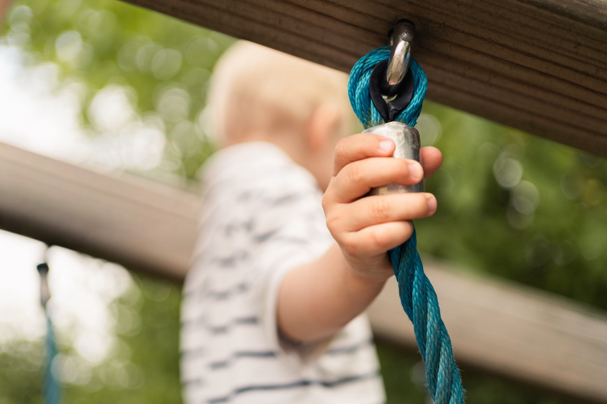
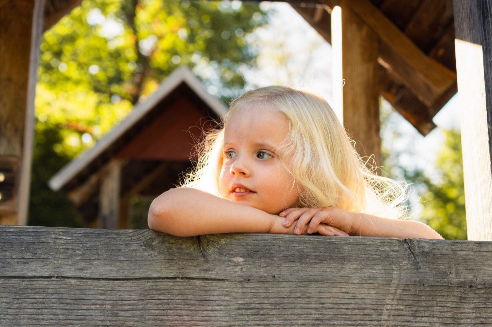
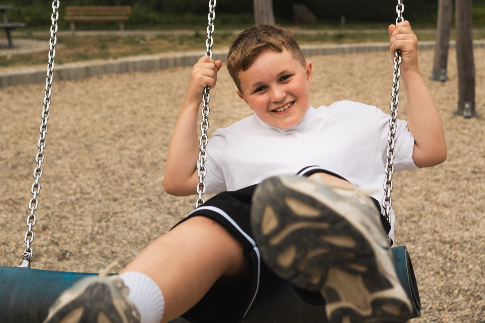
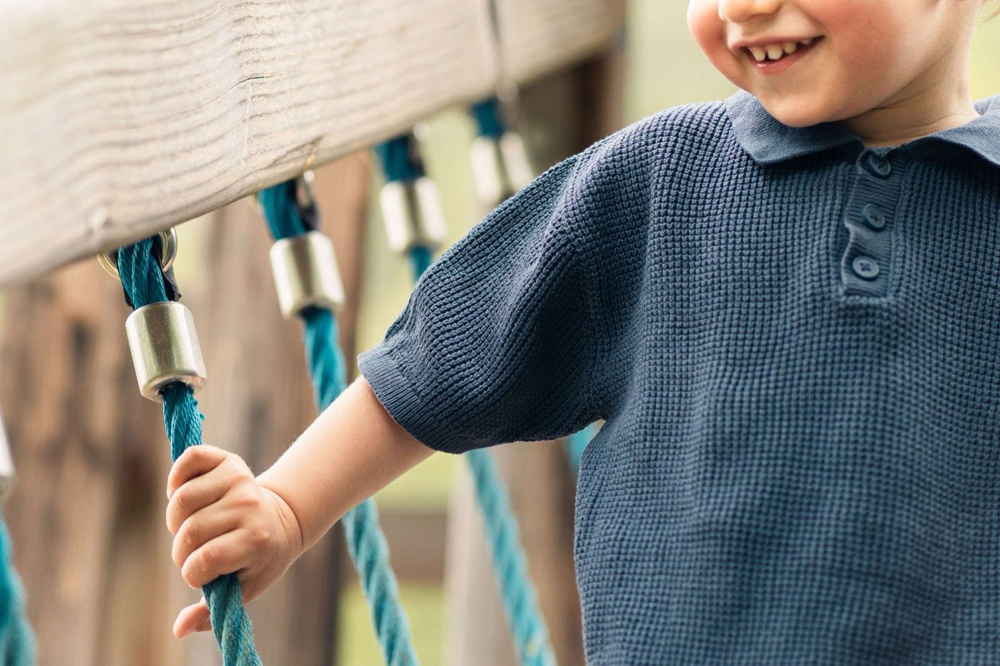
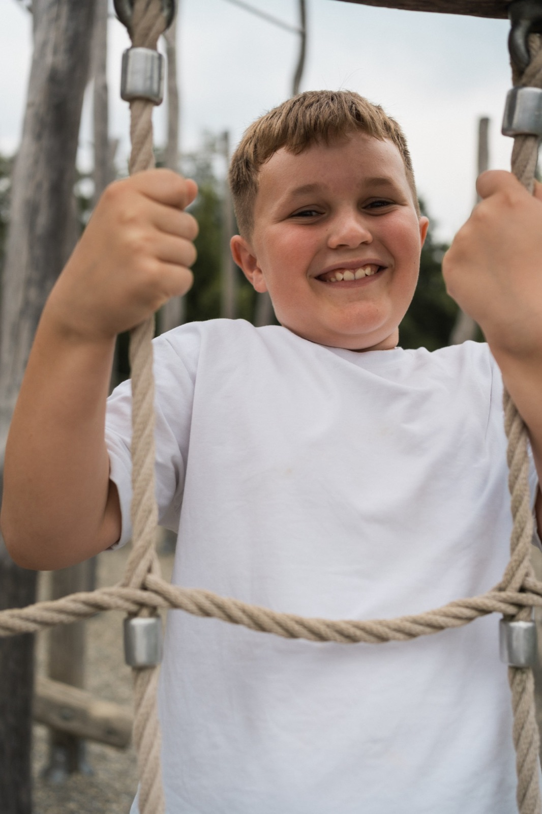
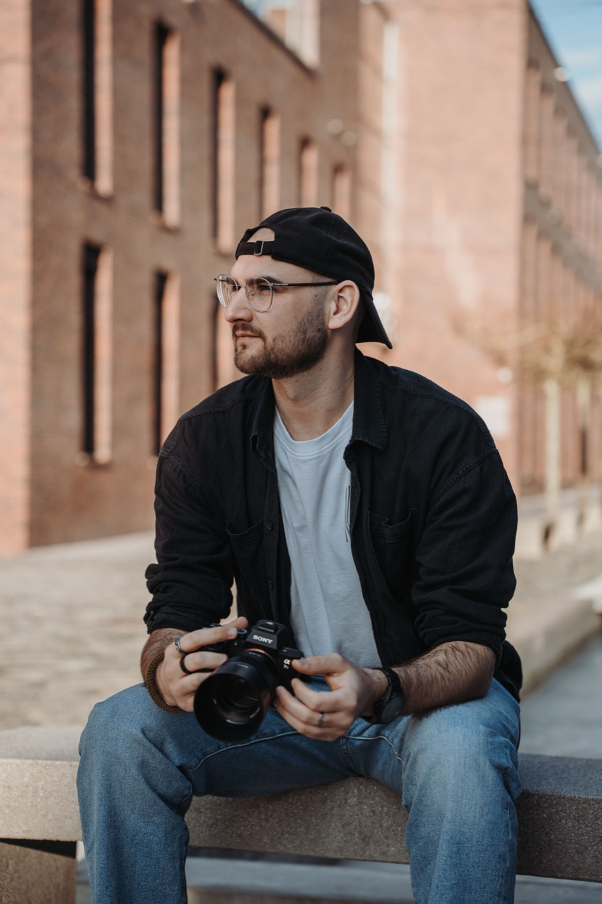

Die Kindheit vergeht schneller, als man denkt. Deshalb liebe ich es, genau die flüchtigen Momente festzuhalten, bevor sie vorbei sind.
Ich habe Design studiert und fünf Jahre in dem Beruf gearbeitet, daher kommt mein Blick für Bildaufbau und Licht. Den Umgang mit Kindern habe ich in meinem freiwilligen sozialen Jahr gelernt, in dem ich ein Inklusionskind durch die erste Klasse begleitet habe. Was ich dort über Geduld und Verantwortung gelernt habe, hilft mir heute mehr als jede Kameraeinstellung.
In Kitas fotografiere ich, weil mich die Arbeit mit Kindern am meisten reizt. Kinder stellen sich nicht in Pose – und genau das macht die Bilder gut. Ich arbeite nur mit dem Licht, das da ist, und mit den Spielgeräten, die die Kinder ohnehin jeden Tag benutzen. Man sieht den Bildern an, wo sie entstanden sind: in Ihrem Garten, an Ihrem Klettergerüst, an einem ganz normalen Vormittag.
Worauf Sie sich verlassen können
Drei Dinge, die mir wichtig sind
Vertrauen
Sensible Bilddaten von Kindern behandle ich so sorgfältig, wie ich es für mein eigenes Kind erwarten würde.
Professionalität
Zuverlässiger Ablauf, klare Absprachen, pünktlich vor Ort. Sie wissen jederzeit, was als Nächstes passiert.
Freundlichkeit
Ruhig und geduldig mit den Kindern. Kein Kind muss vor die Kamera, das gerade nicht möchte.
Ablauf
In drei Schritten
Der Ablauf – ohne Aufwand für Ihre Kita
1
Kennenlernen
Wir sprechen den Fototermin ab und klären alle Fragen rund um Ablauf und Organisation. Von Ihrer Seite braucht es dafür nur einen Platz im Freien, um alles Weitere kümmere ich mich. Wenn Sie mir vorab die Vornamen der Kinder schicken, hilft mir das beim Zuordnen der Bilder – nötig ist es aber nicht.
2
Fototag
Ich komme früh in die Einrichtung, damit die Kinder mich in Ruhe kennenlernen können. Nach einem kurzen Einzelportrait und einem Gespräch über Lieblingsspielzeug, Alter und Name spielen die Kinder frei im Garten, während ich weiter fotografiere. Gruppenbilder runden den Termin ab. Pro Gruppe dauert das ein bis zwei Stunden, danach läuft der Tag ganz normal weiter.
3
Übergabe
Jedes Kind bekommt eine eigene, passwortgeschützte Online-Galerie. Den Zugang erhalten Eltern per E-Mail oder als kleine Zugangskarte, die Sie über die gewohnte Elternpost verteilen. Bestellt und bezahlt wird online: keine Bestelllisten, kein Bargeld im Gruppenraum, keine Mappen, die zurückkommen müssen. Gedruckt wird nur, was wirklich bestellt wird.
Ihr Aufwand in Kürze
Ein Platz im Freien und eine kurze Terminabsprache. Das ist alles.
Ihr Nutzen
Warum sich das für Sie lohnt
Ihr Nutzen auf einen Blick
Kein organisatorischer Aufwand
Planung, Durchführung und Nachbearbeitung laufen vollständig über mich.
Keine Listen, kein Bargeld
Ihr Team muss nichts einsammeln, nichts abrechnen und nichts nachhalten.
Digital statt Papiermappe
Online-Galerie statt Mappen, die verteilt, zurückgegeben und kontrolliert werden müssen.
Natürliche Aufnahmen
Entspannte Kinder im freien Spiel statt gestellter Bilder vor einem Studiohintergrund.
Weniger Ausschuss
Gedruckt wird nur, was Eltern tatsächlich bestellen – nicht standardmäßig für alle.
Eltern fragen mich
Rückfragen zu Bildern und Bestellungen gehen direkt an mich, nicht an Ihr Team.
Kosten für Ihre Einrichtung
0 €
Für die Kita entstehen keine Kosten. Mein Umsatz entsteht ausschließlich über den freiwilligen Kauf einzelner Bilder und Pakete durch die Eltern – ohne Buchungsgebühr für Sie und ohne Bestellverpflichtung für Familien.

Preise & Datenschutz
Was Eltern zahlen
Transparente Preise, keine Verpflichtung
Einzelbild5,90 €
Klassik · Abzüge zum Verschenken und Aufhängen24,90 €
Super · mehr Formate, ein Download inklusive39,90 €
Premium · Silk-Abzüge und mehrere Downloads79,90 €
Geschwister · Einzelbilder plus gemeinsames Foto69,90 €
Alles digital · alle Fotos als Download69,90 €
Die vollständigen Paketinhalte stehen auf bruderjakob-kitafotografie.de/preise. Wer nichts bestellen möchte, muss das nicht – die Galerie anzuschauen ist kostenlos.
Sorgfalt an der richtigen Stelle
Datenschutz und Sicherheit
Der Umgang mit Bildern von Kindern erfordert besondere Sorgfalt – rechtlich wie persönlich.
Galerien und Bestellungen laufen DSGVO-konform über den Dienstleister Fotograf.de.
Getrennte Einwilligungen für die Bilderstellung und für eine mögliche Nutzung zu Marketingzwecken.
Passwortgeschützte Online-Galerien: Die Bilder eines Kindes sieht nur die eigene Familie.
Fotografiert wird ausschließlich mit vorliegender Einwilligung der Erziehungsberechtigten.
Ein erweitertes Führungszeugnis liegt vor und wird auf Wunsch vorgelegt.
Portfolio
Ein paar Bilder
So sehen die Fotos aus
Aufnahmen aus dem freien Spiel draußen: vorhandenes Licht, die Spielgeräte, die ohnehin da sind, und genug Zeit, damit die Kinder mich vorher kennenlernen. Genauso entstehen sie auch bei Ihnen.




Mehr sehen
Eine größere Auswahl zeige ich gern persönlich.
Zwanzig Minuten in Ihrer Teamsitzung oder im Elternbeirat reichen: Ich bringe mehr Bilder mit und beantworte alles, was offen ist. bruderjakob-kitafotografie.de · Instagram: @bruderimfokus
Kontakt
Nächste Schritte
Schauen wir, ob ein Termin bei Ihnen passt?
Ich freue mich, wenn ich Ihnen und den Kindern in Ihrer Einrichtung mit natürlichen Aufnahmen eine schöne Erinnerung schenken darf. Gerne stelle ich mich und mein Angebot auch persönlich vor – unverbindlich und ohne Vorbereitung Ihrerseits.
Direkt erreichbar
Marius Jakob
0152 33934815
kontakt@bruderjakob-kitafotografie.de
bruderjakob-kitafotografie.de
Anschrift
Marius Jakob
Kindergarten Fotografie
Ziegelstraße 15
73084 Salach
Im Einsatz in Göppingen, Kirchheim unter Teck, Schwäbisch Gmünd und Geislingen an der Steige.

Auf eine Anfrage melde ich mich innerhalb von zwei Tagen zurück.
 Kurz vorgestellt
Kurz vorgestellt